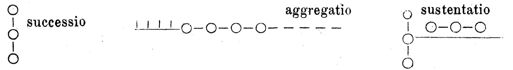

Kant: AA XVII, Reflexionen zur Metaphysik. , Seite 650 |
|||||||
Zeile:
|
Text:
|
|
|
||||
| 01 | Das aggregat obiective betrachtet muß einen gemeinschaftlichen | ||||||
| 02 | Grund der Einheit haben, wodurch das Manigfaltige von einander abhängt. | ||||||
| 03 | (g Die Folge daraus ist: vieles, was unter einander zusammen | ||||||
| 04 | stimmt, hat einen gemeinschaftlichen Grund. ) | ||||||
| 05 |  |
||||||
| 06 | Die continuitaet im Raum und der Zeit. | ||||||
| 07 | Von der intellectuirung der apprehension. | ||||||
| 08 | a und b können auf dreyfache art vermittelst des x in Verhaltnis | ||||||
| 09 | x | ||||||
| 10 | seyn: entweder a : b oder a : x : b oder a + b = x. | ||||||
| 11 | Die innere Nothwendigkeit der Erscheinung, da nemlich dieselbe von | ||||||
| 12 | allem subiektiven losgemacht und unter einer durch eine allgemeine Regel | ||||||
| 13 | (der Erscheinungen) bestimmbar angesehen wird, ist das obiective. Das | ||||||
| 14 | Obiective ist der Grund der Einstimung der Erscheinungen unter ein | ||||||
| 15 | ander. | ||||||
| 16 | In allen drey Einheiten herrscht die Nothwendigkeit. Alles aggregat | ||||||
| 17 | ist zufallig; daher muß etwas seyn, wodurch die respectus desselben nothwendig | ||||||
| 18 | werden. Alles Geschehen ist zufallig, daher dessen Ursprung | ||||||
| 19 | nothwendig sein muß. Alles was bricht ab. | ||||||
| 20 | Das obiective ist der Grund der Einstimmung der Erscheinungen. | ||||||
| 21 | Daher dreyfache Einstimmung: 1. im gemeinschaftlichen subiect, 2. im | ||||||
| 22 | einer gemeinschaftlichen Anfange, 3. im gemeinschaftlichen Ganzen. | ||||||
| 23 | S. III (Briefseite). | ||||||
| 24 | Quer zum Brief: | ||||||
| 25 | Der Unterschied aller unsrer Erkenntnisse der ist der Materie (Inhalt, | ||||||
| 26 | Obiekt) oder der Form nach. Was die letzte betrift, so ist sie Anschauung | ||||||
| 27 | oder Begrif. Jene ist von dem Gegenstande, so fern er gegeben | ||||||
| [ Seite 649 ] [ Seite 651 ] [ Inhaltsverzeichnis ] |
|||||||
;){kind=link}